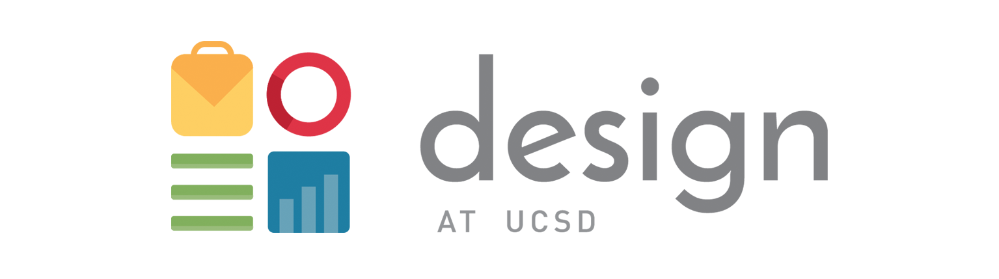
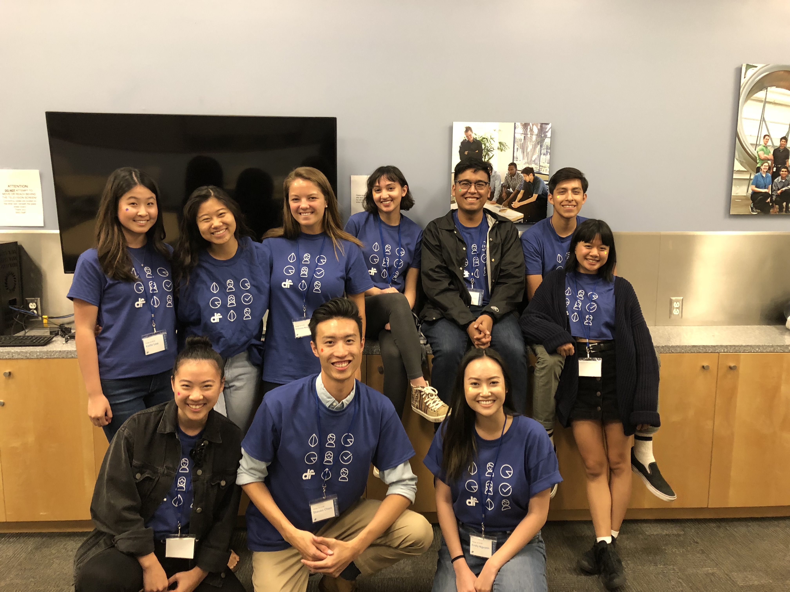

Design at UCSD
Design at UCSD is a pre-professional organization that
aims to be at the forefront of design thinking at UC San Diego. Check out what we have been up to
here!
Roles: Professional Development Chair & Community Engagement Coordinator
Duration: May 2017 - Present

My positions have provided me with the opportunity to develop connections with
industry professionals for guidance as well as the opportunity to assist growing designers within my community.
I was responsible for organizing general body meetings that taught skills necessary for preparing for internships and jobs.
For example, I helped plan a design sprint that focused on quick ideation and problem solving to find a solution for class scheduling.
Copyright © 2019 Brittany Newton